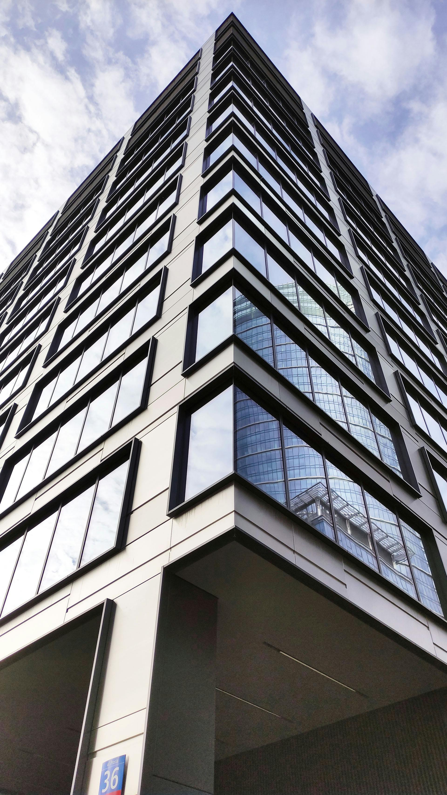
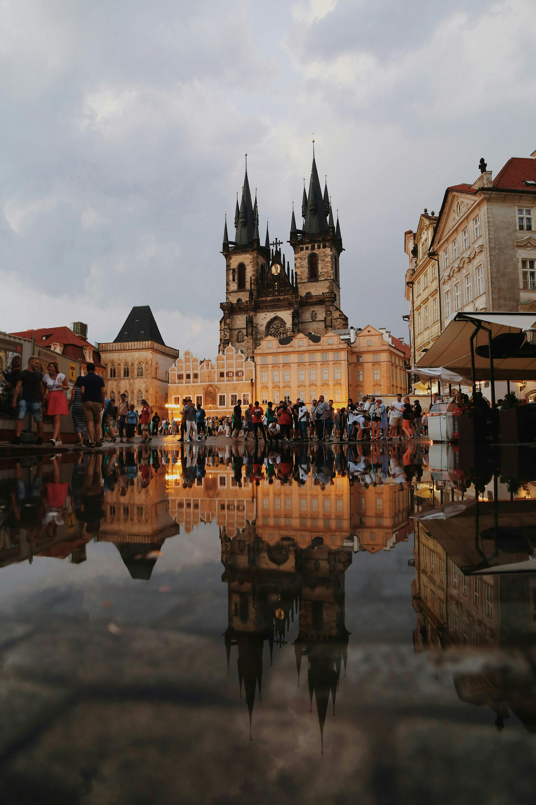
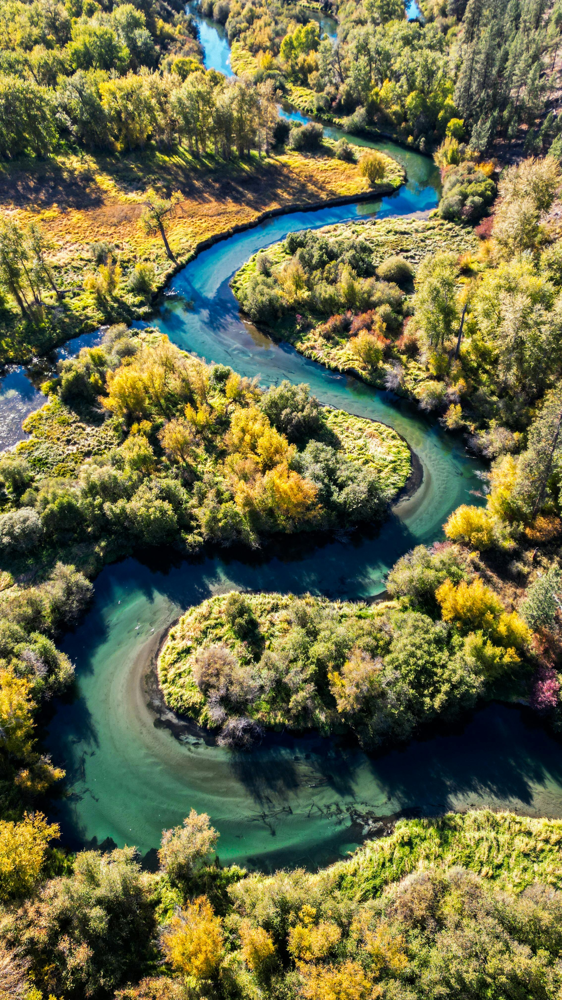
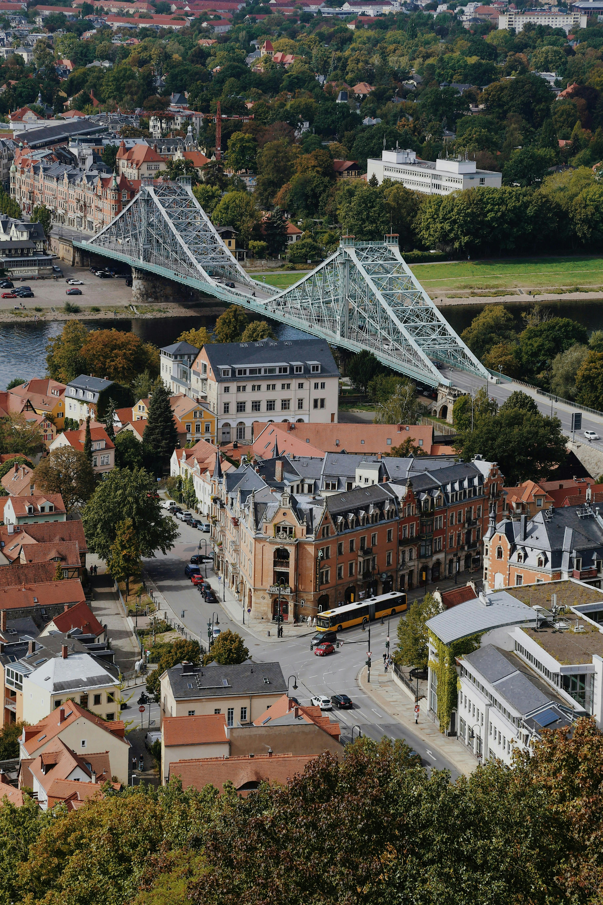

Best Travel Tips

- Best Time to Visit: May to September for safaris and wildlife, October to April for coastal regions and beach holidays.
- Transportation: Renting a car is recommended for flexibility; public transportation is available in cities.
- Language: There are 11 official languages, with English widely spoken in tourist areas.
- Currency: South African Rand (ZAR); credit cards are widely accepted in cities, but carry cash for rural areas.
- Health & Safety: South Africa is generally safe for tourists; take precautions in cities and consult a doctor for malaria areas.
Best Cuisines and Dining Recommendations

- Biltong: Dried cured meat, a popular South African snack.
- Bunny Chow: Hollowed-out bread filled with curry, a street food favorite.
- Bobotie: Spiced minced meat baked with an egg-based topping.
- Malva Pudding: Sweet, sticky dessert served with custard or ice cream.
- Boerewors: A traditional sausage, often served at a "braai" (barbecue).
Best Accommodation Options

- Luxury Safari Lodges: High-end lodges in Kruger National Park and other reserves, offering close-up wildlife experiences.
- Boutique Hotels: Stylish boutique hotels in Cape Town and Johannesburg.
- Beachfront Resorts: Coastal resorts along the Garden Route and in Durban.
- Budget Hostels: Affordable options for backpackers, especially in major cities.
Best Local Culture and Traditions

- Heritage: South Africa has a rich and diverse cultural heritage, with influences from African, European, and Indian traditions.
- Apartheid History: Learn about the country's history at the Apartheid Museum in Johannesburg.
- Festivals: Major cultural festivals include the National Arts Festival in Grahamstown.
- Traditional Music: Experience African rhythms and beats, such as Zulu drumming and marimba bands.
- Craft Markets: Visit local markets for handmade crafts, jewelry, and artwork.
Best Top Tourist Attractions

- Kruger National Park: One of Africa’s largest game reserves, offering Big Five safaris.
- Table Mountain: Iconic flat-topped mountain in Cape Town with panoramic views.
- Robben Island: Historic site where Nelson Mandela was imprisoned, now a museum.
- Garden Route: A scenic coastal drive with beaches, forests, and wildlife reserves.
- Drakensberg Mountains: Stunning mountain range with hiking trails and ancient rock art.
Best Transportation Guides

- Car Rentals: Best way to explore South Africa’s scenic routes and national parks.
- Domestic Flights: Affordable flights between major cities and tourist regions.
- Public Transport: Available in cities like Cape Town and Johannesburg, though not as extensive.
- Guided Tours: Join organized tours for safaris, cultural visits, and city explorations.
Best Outdoor Activities and Adventure

- Safari: Wildlife safaris in Kruger National Park, Addo Elephant Park, and private reserves.
- Hiking: Explore trails in the Drakensberg Mountains or along the Garden Route.
- Shark Cage Diving: Adventure through great white shark waters in Gansbaai.
- Surfing: Popular surf spots include Jeffrey's Bay and Durban.
- Whale Watching: Best time for whale watching is from June to November in Hermanus.
Best Weather and Best Time to Visit

- Winter (Jun-Aug): Dry season, ideal for safaris and game viewing.
- Spring (Sep-Nov): Great for wildflower blooms along the West Coast.
- Summer (Dec-Feb): Warm and sunny, perfect for beach holidays along the coast.
- Autumn (Mar-May): Mild temperatures, great for hiking and outdoor activities.